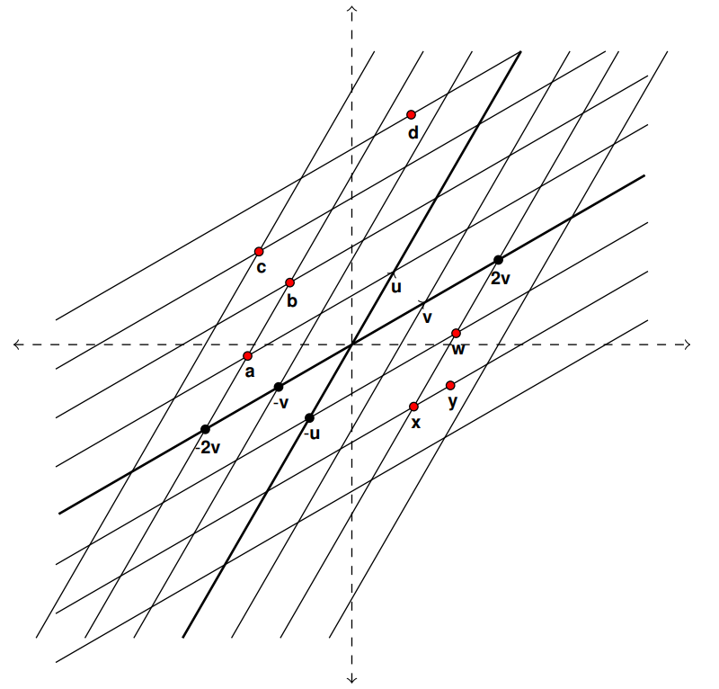

In other words, prove that \((c_1,c_2,...,c_n)\) is a solution to the vector equation iff \((c_1,c_2,...,c_n)\) is a solution to the system of linear equations. Make sure you clearly connect the ideas in your proof and do not make an argument that these equations look similar.
has exactly 1 solution or explain why no such vector exists.
Activity1.6.3.
(a)
Can you write \(\vec{b}=\colvec{2\\2\\4}\) as a linear combination of \(\vec{v_1}=\colvec{2\\1\\1}\) and \(\vec{v_2}=\colvec{2\\-1\\1}\text{?}\) Justify your answer.
(b)
Can you write \(\vec{b}=\colvec{2\\0\\0}\) as a linear combination of \(\vec{v_1}=\colvec{2\\1\\1}\) and \(\vec{v_2}=\colvec{2\\-1\\1}\text{?}\) Justify your answer.
(c)
Can you write \(\vec{b}=\colvec{2\\3\\-1}\) as a linear combination of \(\vec{v_1}=\colvec{2\\1\\1}\) and \(\vec{v_2}=\colvec{2\\-1\\1}\text{?}\) Justify your answer.
(d)
Can you write \(\vec{b}=\colvec{2\\0\\4}\) as a linear combination of \(\vec{v_1}=\colvec{1\\1\\1}\) and \(\vec{v_2}=\colvec{-1\\1\\1}\text{?}\) Justify your answer.
You can use the idea from Activity 1.3.1 to write the solution set as a vector of the variables \(x_1, \ldots , x_n\) where each variable is written in terms of the free variables and constants. This vector form in terms of the free variables is called the parametric form of the solution set.
Question1.6.2.
Give the parametric form of the solution set for the system given by the augmented matrix below.
Write each of the locations given by a red dot as a linear combination of \(\vec{u}\) and \(\vec{v}\text{.}\)

Figure1.6.3.
(b)
Can you write every location in the plane of Figure 1.6.3 as a linear combination of \(\vec{u}\) and \(\vec{v}\text{?}\) Either explain why you can write every point as a linear combination of \(\vec{u}\) and \(\vec{v}\) or give a point that cannot be written as a linear combination of \(\vec{u}\) and \(\vec{v}\text{.}\)